Halo, Detektif Digital!
Pernah nggak, kamu nge-post sesuatu lalu merasa, “Eh, kok yang lihat banyak banget?” Atau dapat pesan berantai yang bikin panik, ternyata cuma hoaks? Hari ini kita menyelidiki kenapa hal-hal seperti itu bisa terjadi, dan apa yang bisa kita lakukan supaya tetap aman.
- Menyebutkan contoh ruang publik digital dan 4 sifatnya.
- Menjelaskan dampak positif dan negatif beraktivitas di sana.
- Menganalisis risiko cyberbullying, hoaks, data pribadi, Wi-Fi publik, kecanduan layar.
- Memilih tindakan aman (THINK, SARING, S-B-L-C).
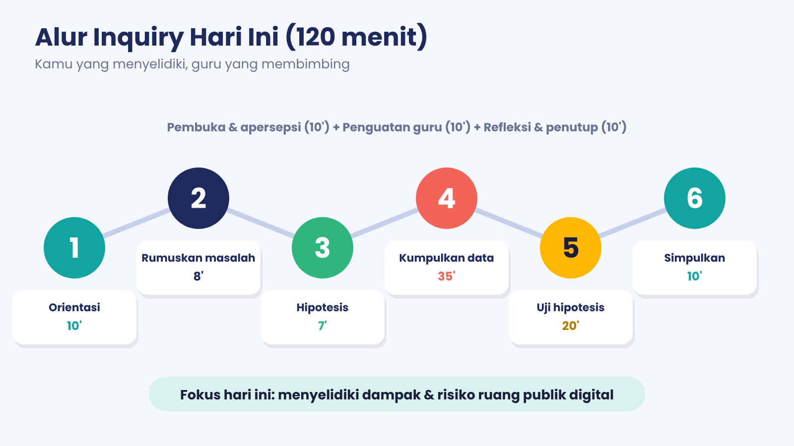
1. Ruang publik digital itu apa sih?
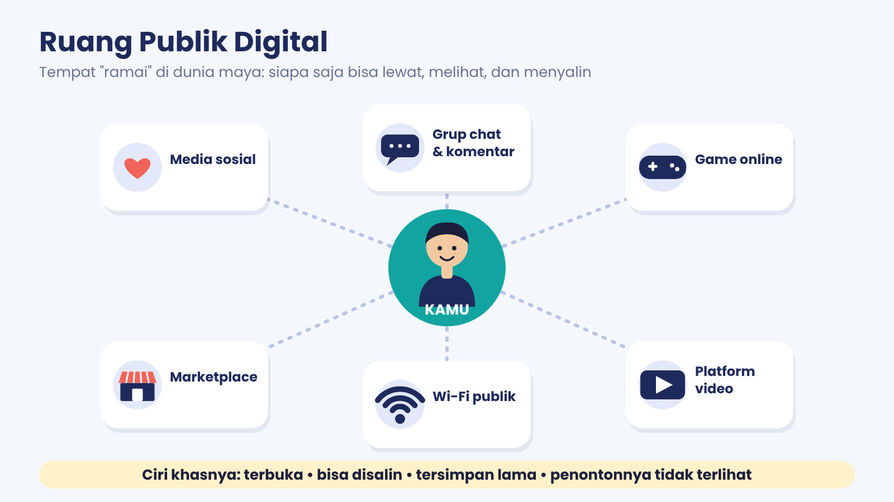
Bayangkan alun-alun kota atau pasar. Ramai, kan? Siapa saja boleh datang, melihat, dan ngobrol. Di dunia maya ada tempat yang mirip: ruang publik digital, yaitu tempat atau jaringan online yang bisa diakses dan dilihat banyak orang. Contohnya media sosial, kolom komentar, grup chat besar, game online, marketplace, platform video, bahkan Wi-Fi umum di kafe atau mal.
Buku Informatika Kelas IX menegaskan bahwa ruang publik di era digital bukan hanya tempat fisik, tetapi juga jaringan yang terhubung secara digital, dan jaringan di ruang publik lebih mudah disalahgunakan.
2. Empat sifat ruang digital (P-T-M-M)
Kenapa satu unggahan kecil bisa jadi heboh? Karena ruang digital punya empat sifat:
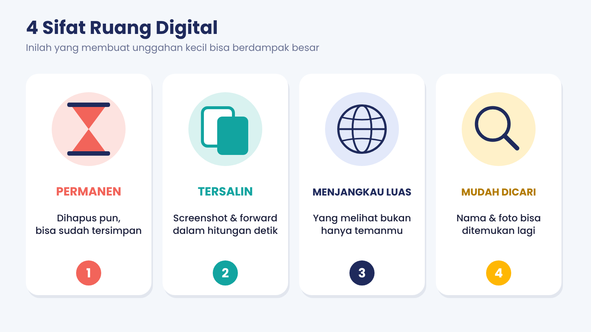
| Sifat | Artinya | Contoh |
|---|---|---|
| Permanen | Bisa tersimpan lama, walau sudah dihapus. | Unggahan kelas VII muncul lagi saat daftar OSIS. |
| Tersalin | Bisa di-screenshot, diunduh, diteruskan dalam hitungan detik. | Komentarmu di-screenshot dan dikirim ke grup lain. |
| Menjangkau luas | Yang lihat bukan cuma temanmu. | Videomu ditonton orang di kota lain. |
| Mudah dicari | Nama dan fotomu bisa ditemukan lewat pencarian. | Orang asing mengetik namamu dan menemukan sekolahmu. |
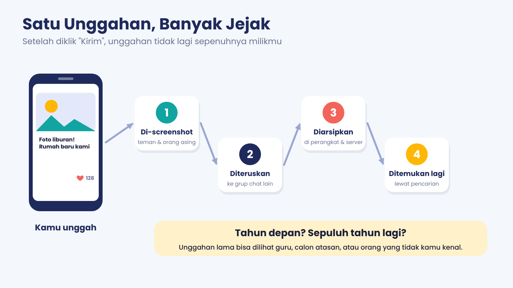
Mini game: pasangkan sifat dan situasi
3. Dua sisi: manfaat dan risiko
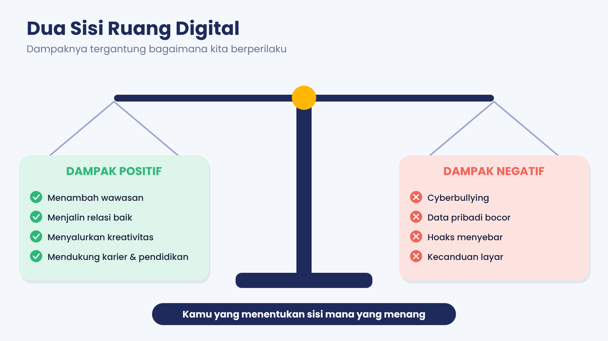
Ruang digital itu seperti pisau dapur: membantu masak, tapi bisa melukai kalau dipakai sembarangan.
| Dampak positif | Dampak negatif |
|---|---|
|
|
Bukan berarti kita harus menjauh dari dunia digital. Kuncinya: tahu risikonya, lalu pintar mengendalikannya.
4. Misi Detektif: kenali 5 risikonya
Klik tiap risiko untuk membuka penjelasannya.
Risiko 1 — Cyberbullying
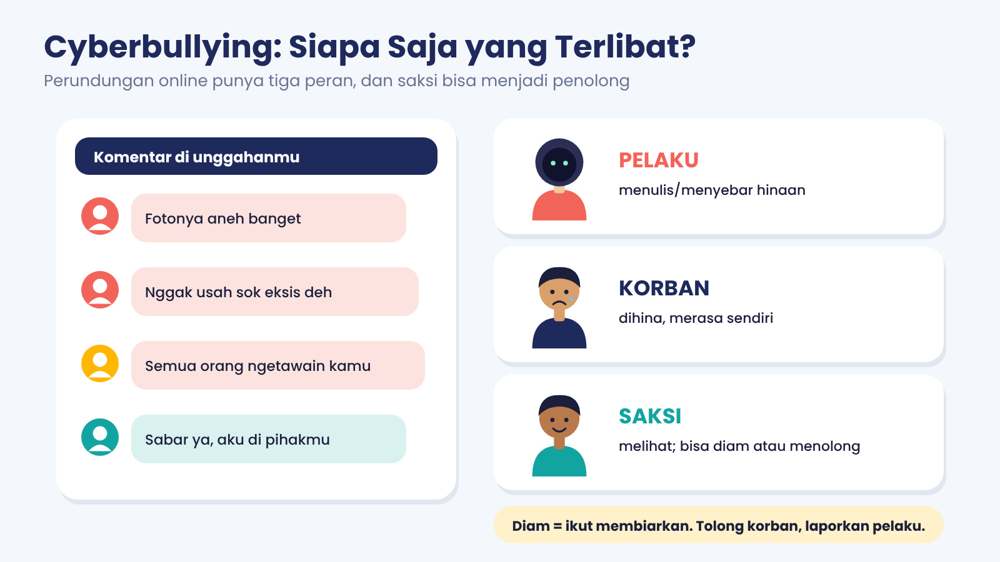
Apa itu? Perundungan lewat dunia digital: hinaan, ejekan, menyebar foto atau stiker yang mempermalukan, mengucilkan dari grup.
Kenapa berbahaya? Terjadi 24 jam, ditonton banyak orang, pelaku bisa bersembunyi di akun palsu. Korban bisa malu, cemas, susah tidur, malas sekolah. Ada tiga peran: pelaku, korban, dan saksi. Kalau saksi diam atau ikut menertawakan, pelaku makin berani.
Yang bisa kamu lakukan: Simpan bukti, Blokir, Laporkan, Cerita ke orang dewasa tepercaya. Jangan membalas dengan hinaan dan jangan ikut menyebarkan.
Risiko 2 — Hoaks dan pesan berantai
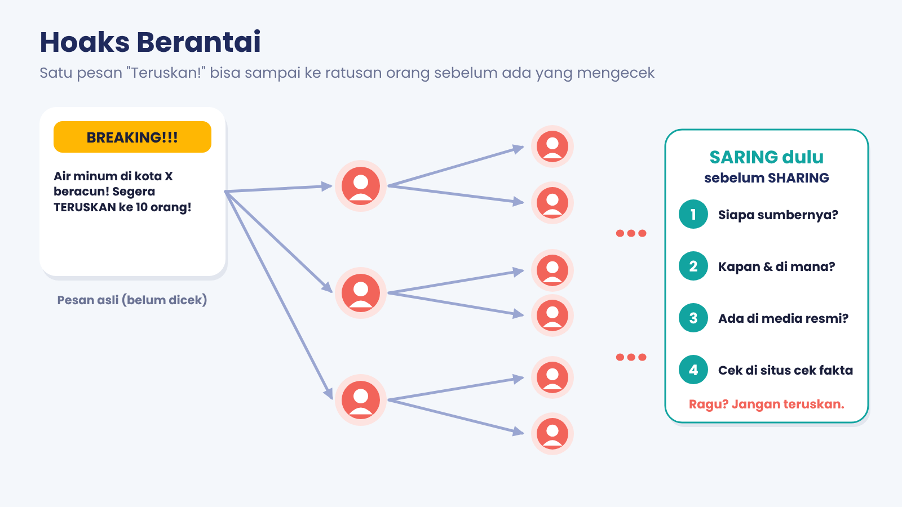
Apa itu? Informasi palsu atau menyesatkan yang dikemas seolah-olah benar.
Cirinya: bikin takut atau marah, HURUF BESAR, tanpa sumber dan tanggal, menyuruh “TERUSKAN!”. Kalau kamu meneruskan, kamu ikut jadi rantai penyebarnya.
SARING dulu sebelum SHARING: Siapa sumbernya? Kapan dan di mana kejadiannya? Ada di media resmi? Cek di situs cek fakta (cekfakta.com, turnbackhoax.id). Ragu? Jangan teruskan. Terlanjur? Hapus dan kirim klarifikasi di grup yang sama.
Risiko 3 — Data pribadi dan jejak digital
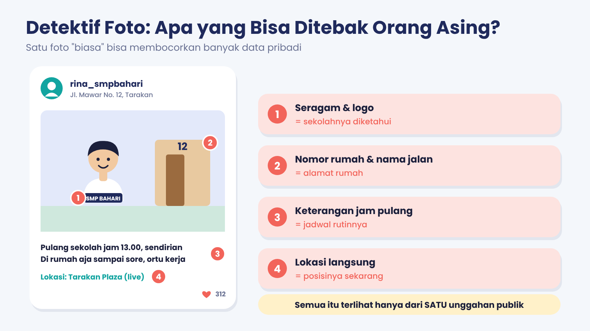
Apa itu? Oversharing: membagikan alamat, seragam, jadwal, nomor rumah, lokasi langsung. Semua yang diunggah meninggalkan jejak digital (aktif: yang sengaja dibagikan; pasif: terkumpul otomatis).
Kenapa berbahaya? Dari satu foto, orang asing bisa menebak sekolah, rumah, dan kapan kamu sendirian. Bisa berujung penipuan, peretasan, penyalahgunaan data. Jejak lama juga bisa muncul lagi saat kamu butuh reputasi baik.
Yang bisa kamu lakukan: akun privat, terima pertemanan dari yang dikenal, hindari lokasi langsung dan nomor rumah, periksa lagi foto dan caption sebelum unggah.
Risiko 4 — Wi-Fi publik
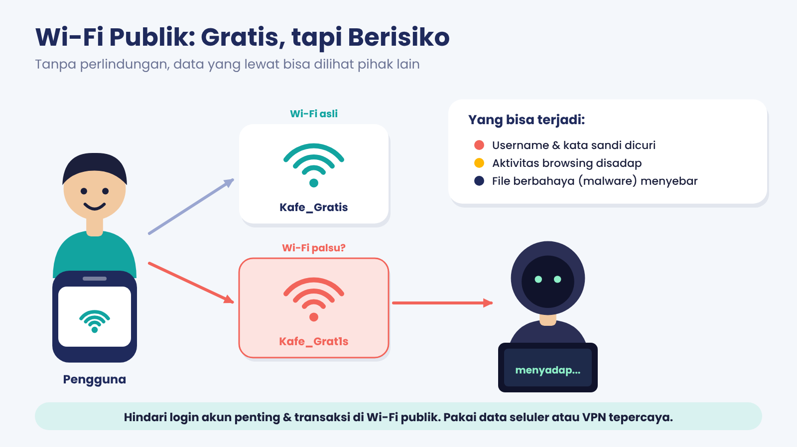
Apa itu? Internet gratis di kafe, mal, terminal, atau taman yang dipakai banyak orang.
Tiga risiko (Buku Siswa): pencurian data pribadi, penyadapan, dan penyebaran malware. Waspadai Wi-Fi palsu bernama mirip, misalnya “Kafe_Grat1s” untuk menipu “Kafe_Gratis”.
Yang bisa kamu lakukan: tanya nama dan sandi resmi ke petugas; jangan login akun penting atau transaksi (pakai data seluler); jangan unduh aplikasi dari pop-up “gratis”; aktifkan 2FA, lalu log out dan lupakan jaringan setelah selesai.
Risiko 5 — Kecanduan layar
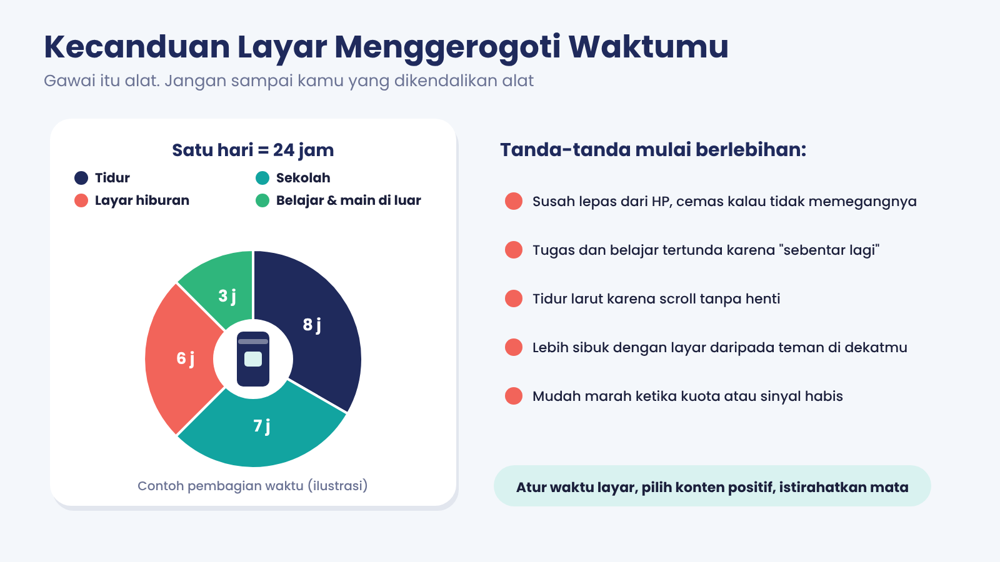
Apa itu? Terlalu lama memakai gawai sampai belajar dan bergaul di dunia nyata terganggu.
Tandanya: susah lepas dari HP, tugas tertunda karena “sebentar lagi”, tidur larut, mudah marah saat kuota habis.
Yang bisa kamu lakukan: atur batas waktu layar, matikan notifikasi saat belajar/tidur, jadwalkan aktivitas di luar dan ngobrol langsung.
5. Peta risiko: semuanya nyambung
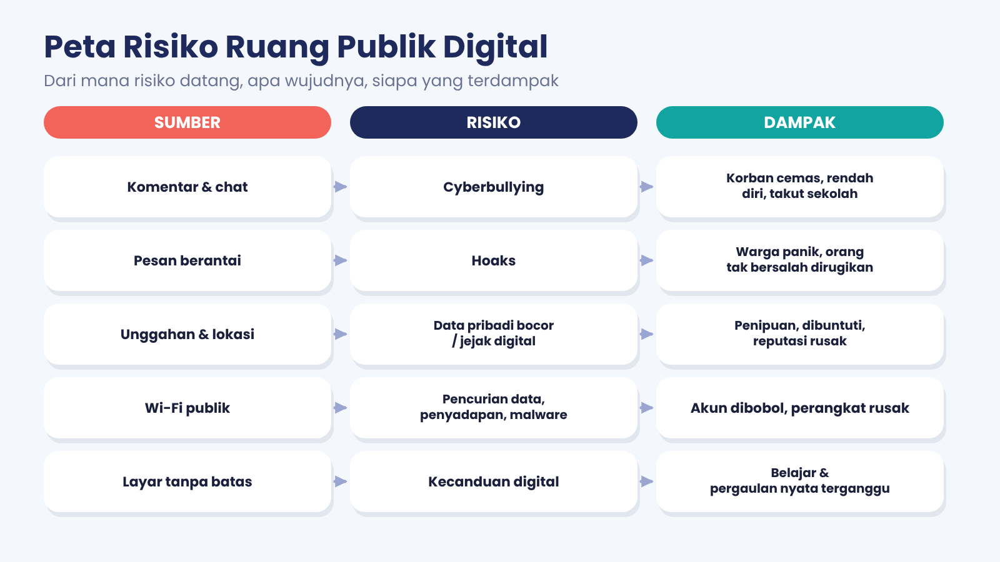
Lihat polanya? Sumber → Risiko → Dampak. Kalau bisa membaca pola ini, kamu bisa menebak risiko dari situasi baru.
6. Jurus aman: THINK dan S-B-L-C
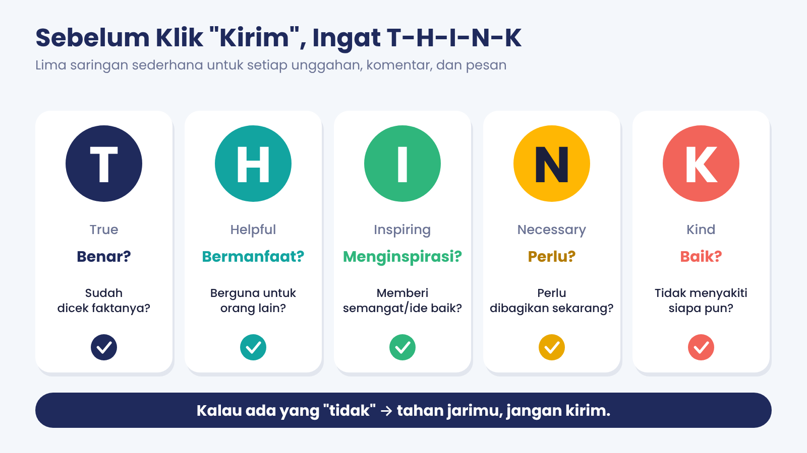
Cek THINK-mu
Bayangkan kamu mau mengirim komentar. Centang yang benar:
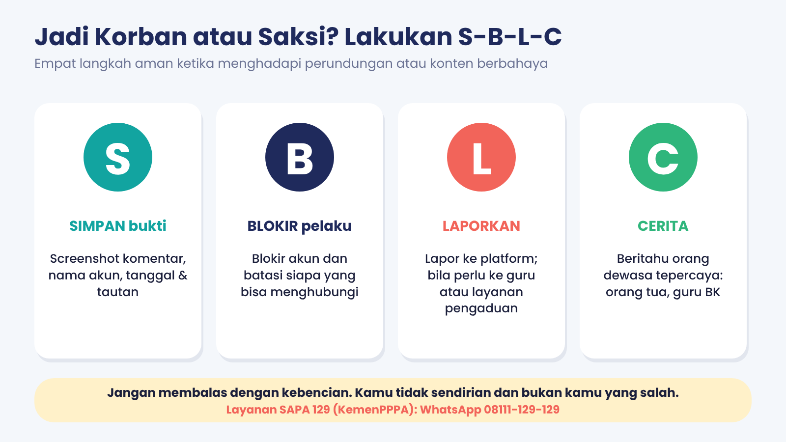
Kalau kamu atau temanmu jadi korban: Simpan bukti – Blokir – Laporkan – Cerita. Kamu juga bisa menghubungi SAPA 129 (WhatsApp 08111-129-129) milik Kementerian PPPA; siapa pun boleh melapor.
7. Rangkuman
- Ruang publik digital = tempat/jaringan online yang bisa diakses dan dilihat banyak orang (termasuk Wi-Fi umum).
- Empat sifat: permanen, tersalin, menjangkau luas, mudah dicari.
- Ada dampak positif dan negatif; hasilnya tergantung perilaku kita.
- Risiko: cyberbullying, hoaks, data pribadi/jejak digital, Wi-Fi publik, kecanduan layar.
- Jurus aman: THINK, SARING, S-B-L-C.
Kosakata penting
| Istilah | Artinya |
|---|---|
| Jejak digital | Rekam aktivitasmu di internet, sengaja dibagikan maupun terkumpul otomatis. |
| Oversharing | Membagikan terlalu banyak informasi pribadi. |
| Hoaks | Informasi palsu atau menyesatkan yang dikemas seolah benar. |
| Malware | Program berbahaya yang merusak perangkat atau mencuri data. |
| Hotspot palsu | Wi-Fi tiruan bernama mirip untuk menjebak pengguna. |
| 2FA | Autentikasi dua faktor: verifikasi login dengan langkah tambahan. |
8. Kuis cepat
Skor: 0/5